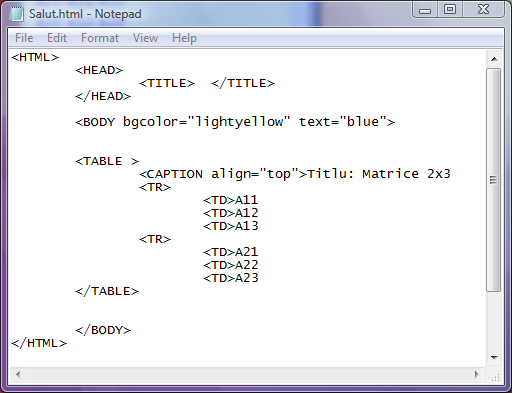
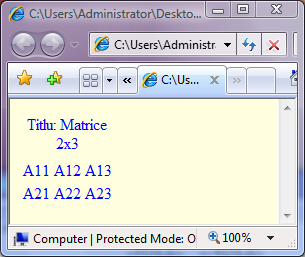
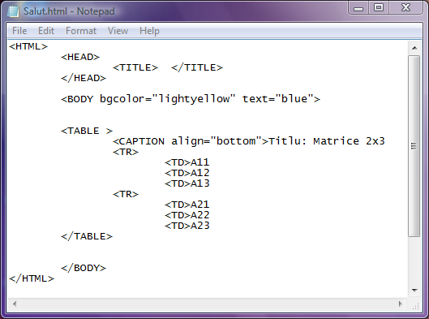
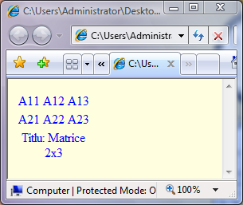

Atribute tabele
Titlul tabelului
Unui tabel i se poate atribui un titlu cu ajutorul etichetei CAPTION plasata imediat dupa eticheta
TABLE sau imediat inainte de eticheta /TABLE, dar in nici un caz intre etichete TR sau TD!!!
Eticheta CAPTION admite ca atribut align cu valorile posibile "bottom" (sub tabel), "top
(deasupra tabelului), "left" (la stanga tabelului) sau "right" (la dreapta tabelului) si determina
pozitia titlului fata de tabel. Sintaxa definirii unui titlu de tabel este evidentiata in exemplele de mai jos:
a)iata un titlu de tabel aliniat "top" (deasupra tabelului)


b)un titlu de tabel aliniat "bottom" (dedesubtul tabelului)


Observatie:
Din observatiile mele plasarea titlului la stanga sau la dreapta tabelului nu este interpretata de
Internet Explorer...
Inapoi la Tabele...